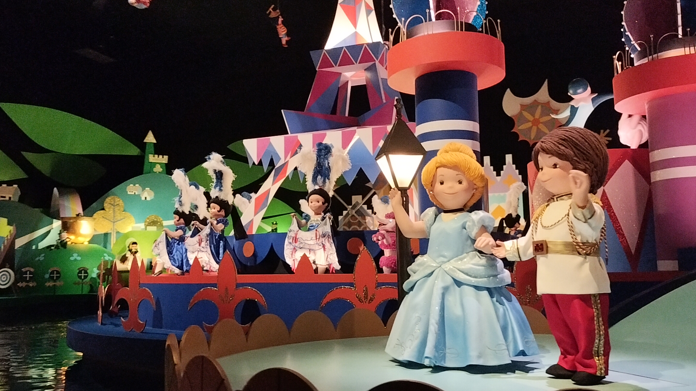

it's a small worldについて
it's a small worldとシャーマン兄弟
ウォルト・ディズニーがアトラクション制作にあたって、アトラクション内のオーディオ・アニマトロニクスの人形が複数の言語で歌える一曲の楽曲制作をシャーマン兄弟に依頼しました。

it's a small world内のオーディオ・アニマトロニクスの人形（ページ作成者 撮影）
シャーマン兄弟について
- 兄 ロバート・シャーマン
- 1925年12月19日 - 2012年3月5日
- 弟 リチャード・シャーマン
- 1928年6月12日 - 2024年5月25日
シャーマン兄弟は、1990年にディズニーのレガシーに多大な影響を与えた多くの才能あるアニメーター、イマジニア、ソングライター、俳優、ビジネスリーダーに贈られる「ディズニー・レジェンド賞」を受賞している。
シャーマン兄弟が手がけたその他の楽曲
- 『メリー・ポピンズ』（アメリカ公開年 1964年）より
チム・チム・チェリー
スーパーカリフラジリスティックエクスピアリドーシャス
レッツ・ゴー・フライ・ア・カイト
- 『ジャングルブック』（アメリカ公開年 1967年）より
君のようになりたい
- 『おしゃれキャット』（アメリカ公開年 1972年）より
おしゃれキャット
- 『くまのプーさん』（アメリカ公開年 1966年）より
くまのプーさん
ズオウとヒイタチ
参考ページ
- Walt Disney World."it's a small world" | Magic Kingdom Attractions.
https://disneyworld.disney.go.com/attractions/magic-kingdom/its-a-small-world/ （参照日 2025-12-22）
- D23.Robert Sherman.
https://d23.com/walt-disney-legend/robert-sherman/ （参照日 2025-12-22）
- D23.Richard Sherman.
https://d23.com/walt-disney-legend/richard-sherman/（参照日 2025-12-22）
- D23.How the Sherman Brothers Shaped Disney’s Musical Legacy.
https://d23.com/how-the-sherman-brothers-shaped-disneys-musical-legacy/（参照日 2026-01-05）